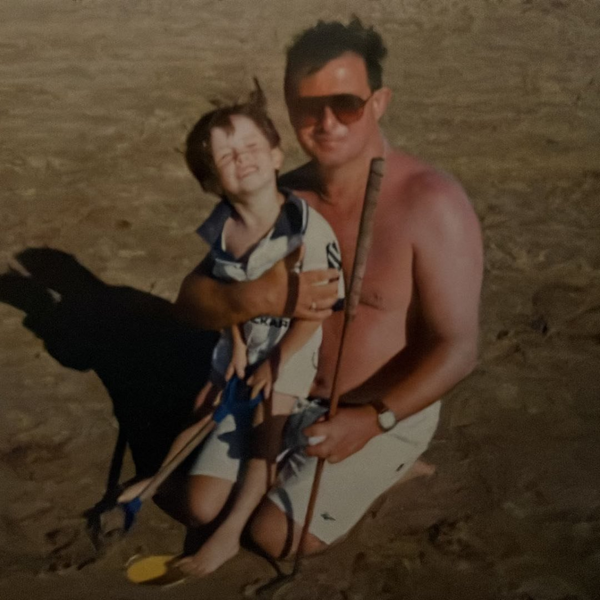
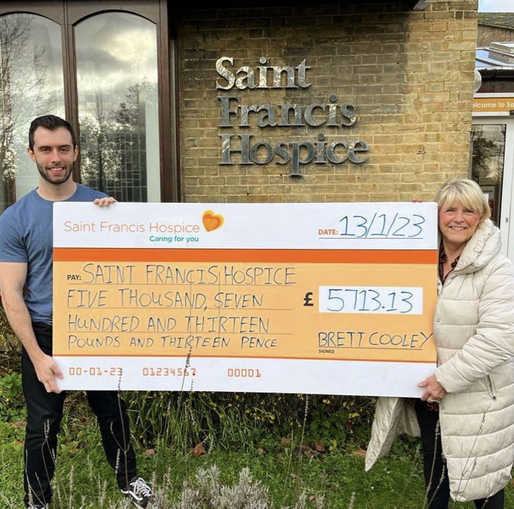
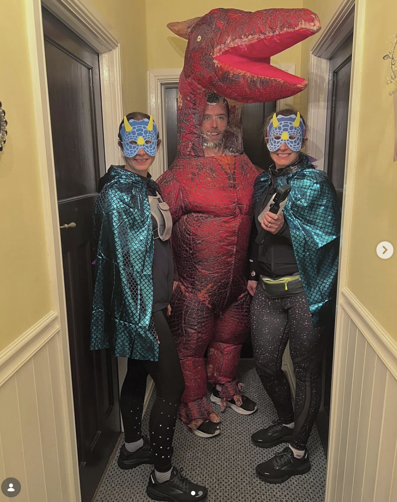
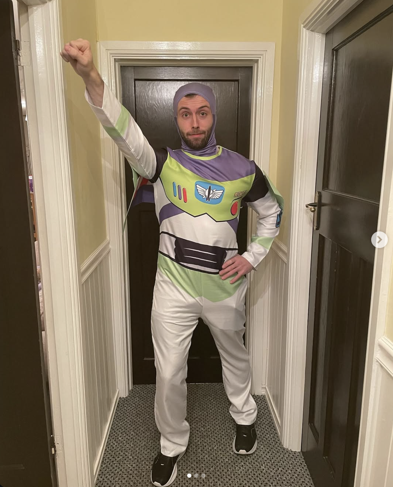
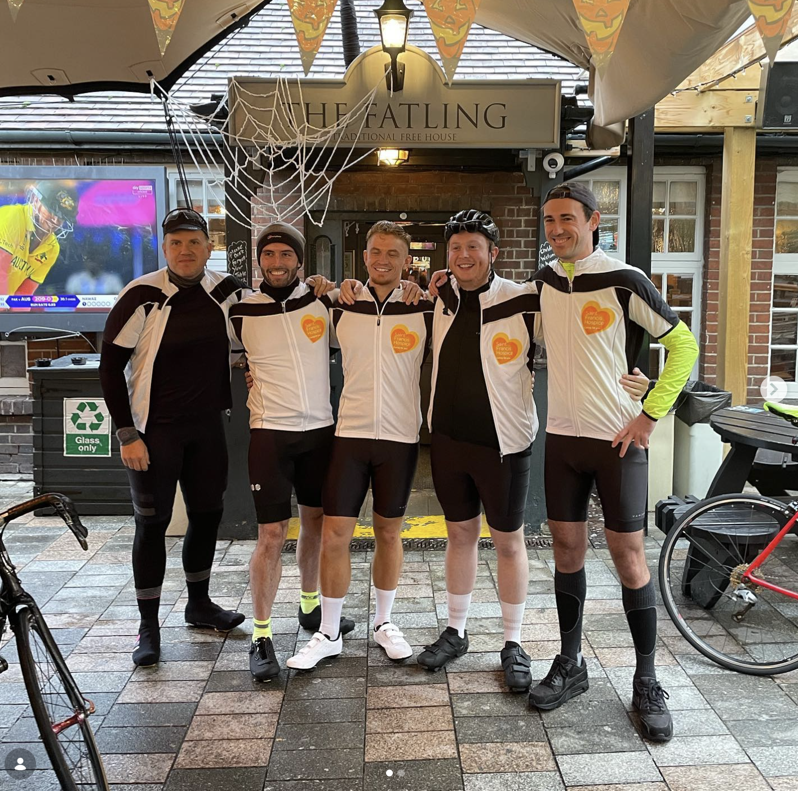
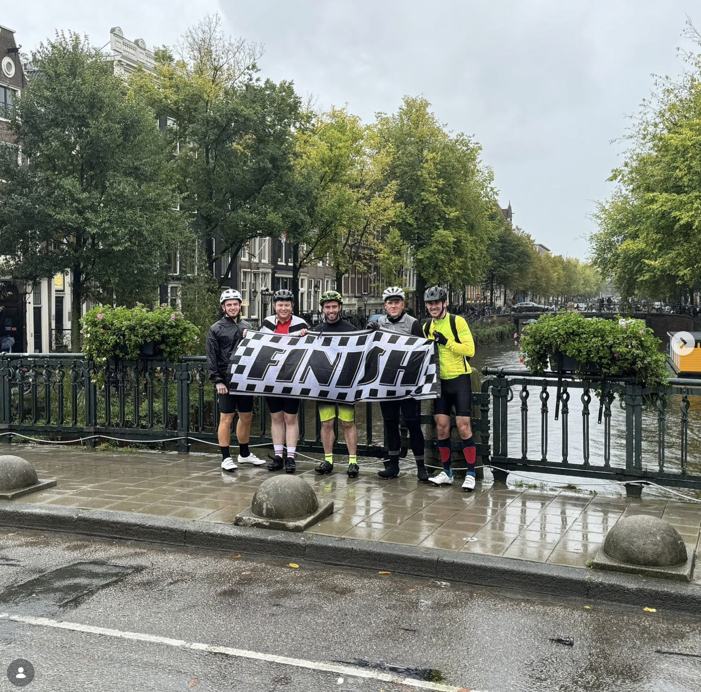
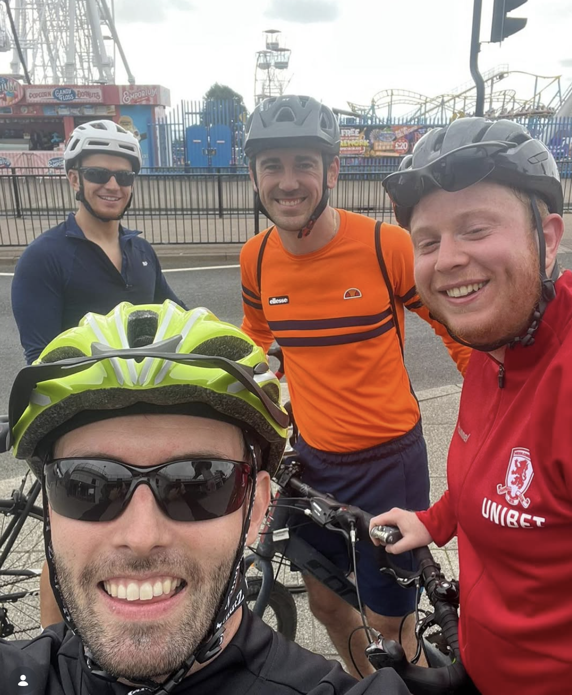
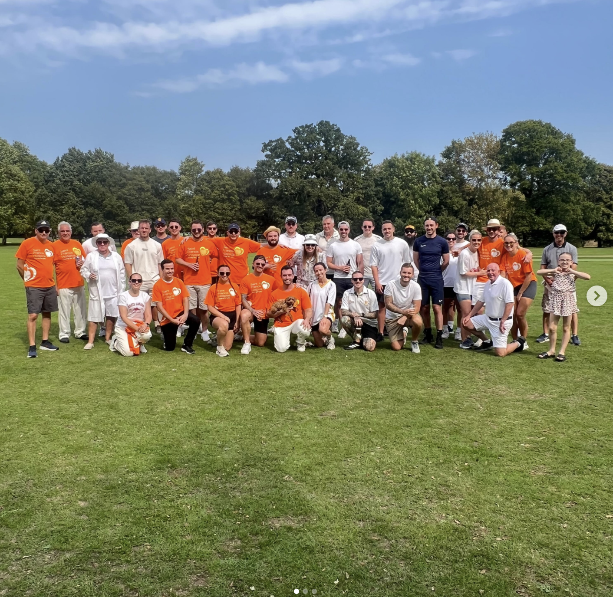
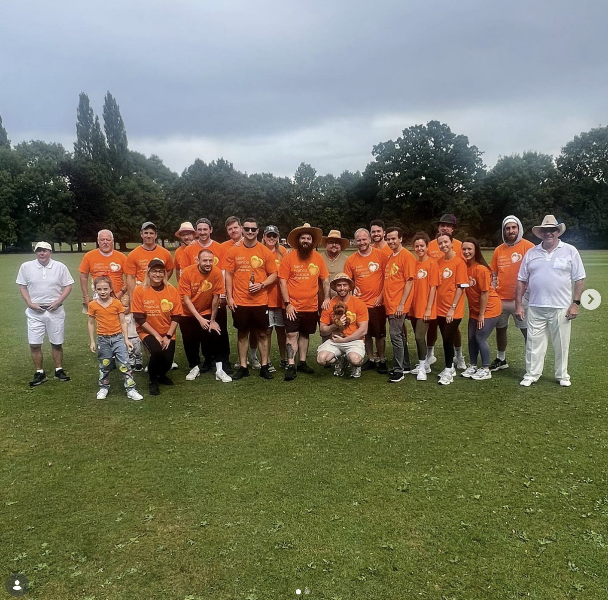
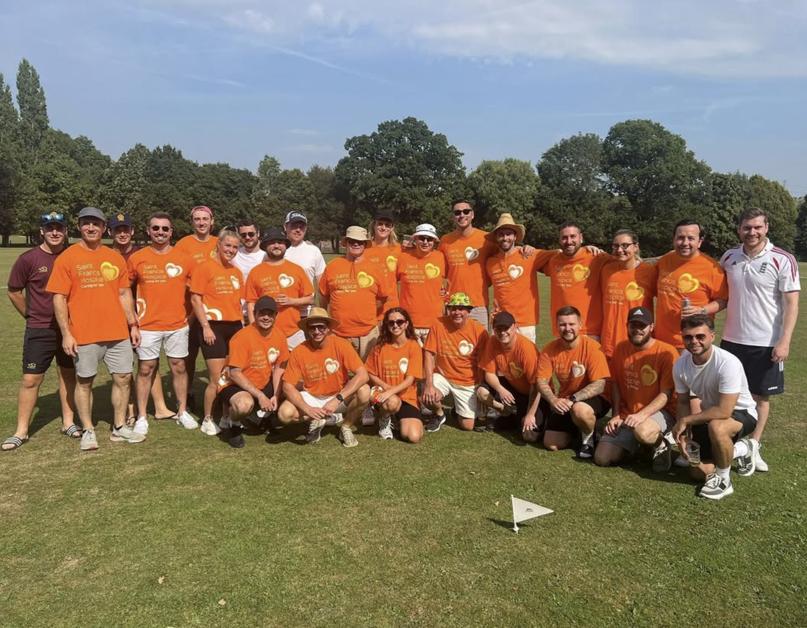

Charity
St Francis Hospice
My late father passed on 4th September 2022 to prostate cancer. The hospice did a phenomenal job in looking after him and by raising money I am giving back.


The
Challenges
My fundraising
journey
- Ran 10 miles every day in December 2022
- Cycled London to Amsterdam in 24 hours 2023
- Hosted an annual charity cricket match (4 years and counting)
The running challenge
10 Miles Every Day
A personal challenge to run 10 miles every day throughout December in fancy dress.



The cycling challenge
London to Amsterdam
Cycling from London to Amsterdam in just 24 hours. This was a physical and mental test that pushed me to my limits.



The annual event
Charity Cricket Match
Organising and hosting an annual charity cricket match for the past four years, bringing people together to raise funds and support for St Francis Hospice.


